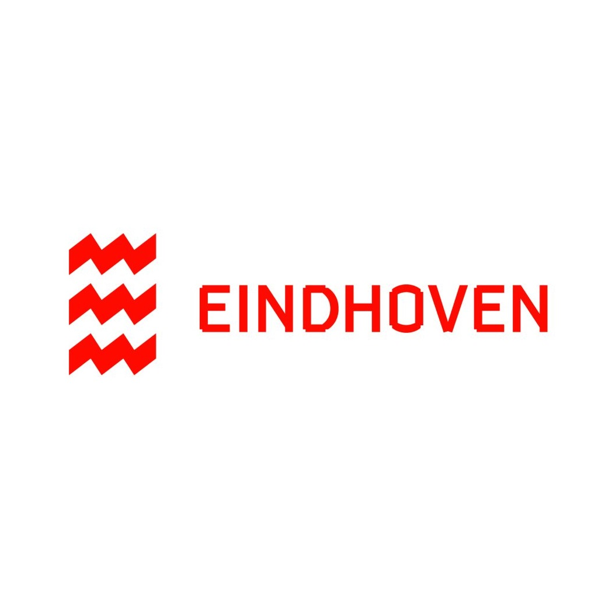
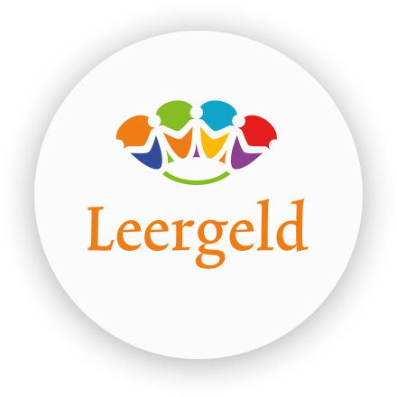

Fietsinitiatieven in Nederland
In Nederland zijn er veel mensen die geen eigen fiets kunnen betalen. Gelukkig zijn er instanties die er voor zorgen dat het voor iedereen haalbaar is om te kunnen fietsen. Deze instanties verstrekken fietsen, zodat iedereen in beweging kan blijven, ongeacht hun situatie.


Natuurlijk wil ook De Fluitende Fietser een mooie bijdrage doen aan deze initiatieven. Daarom organiseren wij een leuke winactie! Wij geven maar liefst 3 mooie fietsen weg aan onze deelnemers. Wat moet je hier voor doen? Meld jezelf aan via onze contactpagina en vul het formulier in! Daarna gaan wij willekeurig 3 winnaars kiezen. Dus meld je snel aan!